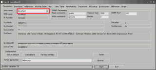

mrtgでサーバ状態の監視
Home > Software > ソフトウエア開発・サーバ管理のメモ帳 > このページ
Last Update 2012/01/27

サーバのCPU負荷・温度・ネットワーク転送量などを、MRTGでグラフ化してWebサーバ経由で監視する方法
Linux（RHEL, CentOS, Fedora）での設定
CPU・M/B温度センサからの読み込み設定
まず、LM75など温度センサーICとのインターフェース・デーモンをインストールする。
[root@wslnx-111 ~]# yum install lm_sensors
～ （中略） インストールされる画面表示 ～
[root@wslnx-111 ~]# sensors-detect
～ （中略） 自動コンフィグ、質問は基本的にデフォルトのYESなどで ～
sensors-detect のコンフィグ中の表示で /etc/rc.local と /etc/modprobe.conf に追加すべき記述が出てくるので、それが追加されているか各設定ファイルを開いてチェックする。（赤で示した行が追加されていない場合は、手動追加する）
/etc/modprobe.conf
... （前略） ...
/modprobe -r --ignore-remove snd-hda-intel
# I2C module options
alias char-major-89 i2c-dev
/etc/rc.local
... （前略） ...
touch /var/lock/subsys/local
# I2C adapter drivers
modprobe i2c-i801
modprobe i2c-isa
# I2C chip drivers
modprobe eeprom
modprobe w83627hf
# sleep 2 # optional
/usr/bin/sensors -s # recommended
なお、各値名前や値の最大・最小などを決める定義ファイルは /etc/sensors.conf に書かれているので、マシンのセンサー名の項目以下を適宜修正する。
/etc/sensors.conf
... （前略） ... chip "w83627thf-*" "w83637hf-*" label in0 "VCore" label in1 "+12V" label in2 "+3.3V" label in3 "+5V" label in4 "-12V" label in7 "V5SB" label in8 "VBat" compute in1 ((28/10)+1)*@, @/((28/10)+1) compute in3 ((34/51)+1)*@, @/((34/51)+1) compute in4 (5.14*@)-14.91, (@+14.91)/5.14 compute in7 ((6.8/10)+1)*@ , @/((6.8/10)+1) set in0_min 0.988 * 0.98 # Pentium M 750 Vccmax set in0_max 1.356 * 1.00 # Pentium M 750 Vcclfm set in1_min 12 * 0.95 set in1_max 12 * 1.05 set in2_min 3.3 * 0.95 set in2_max 3.3 * 1.05 set in3_min 5.0 * 0.95 set in3_max 5.0 * 1.05 set in4_min -12 * 1.10 set in4_max 0 set in7_min 5 * 0.95 set in7_max 5 * 1.05 set in8_min 3.0 * 0.80 set in8_max 3.0 * 1.20 # set sensor1 1 # set sensor2 2 # set sensor3 3435 label temp1 "M/B Temp" label temp2 "CPU Temp" ignore temp3 set temp1_over 45 set temp1_hyst 35 set temp2_over 60 set temp2_hyst 50 label fan1 "Case Fan" label fan2 "CPU Fan" ignore fan3 set fan1_div 8 set fan1_min 1400 # fanx_min must be written after fanx_div set fan2_div 8 set fan2_min 2000 set beep_enable 0
Linuxを再起動するか、lm_sensorsデーモンを再起動して、モジュールがちゃんと読み込まれているか確認する
※ 再起動しない場合、modprobeを手動で実行する必要がある場合もある。
[root@wslnx-111 ~]# /etc/rc.d/init.d/lm_sensors restart
lm_sensors を停止中: [ OK ]
lm_sensors を起動中: [ OK ]
[root@wslnx-111 ~]# lsmod | grep -e i2c
i2c_isa 5697 1 w83627hf
i2c_ec 5569 1 sbs
i2c_i801 8013 0
i2c_core 21697 5 w83627hf,eeprom,i2c_isa,i2c_ec,i2c_i801
[root@wslnx-111 ~]#
端末上で現在のセンサーの計測値を表示すると...
[root@wslnx-111 ~]# sensors
w83627thf-isa-0290 ← マシンのセンサー名（sensors.confではこのセンサー項目を編集すれば良い)
Adapter: ISA adapter
VCore: +1.00 V (min = +0.97 V, max = +1.35 V)
+12V: +12.10 V (min = +11.37 V, max = +12.59 V)
+3.3V: +3.38 V (min = +3.14 V, max = +3.47 V)
+5V: +4.96 V (min = +4.75 V, max = +5.25 V)
-12V: -5.62 V (min = -13.18 V, max = -0.02 V)
V5SB: +5.00 V (min = +4.76 V, max = +5.24 V)
VBat: +3.30 V (min = +2.40 V, max = +3.60 V)
Case Fan: 1577 RPM (min = 1394 RPM, div = 8) (beep)
CPU Fan: 2191 RPM (min = 2008 RPM, div = 8) (beep)
M/B Temp: +26°C (high = +45°C, hyst = +35°C) sensor = thermistor
CPU Temp: +41.0°C (high = +60°C, hyst = +50°C) sensor = diode (beep)
alarms:
beep_enable:
Sound alarm disabled
[root@wslnx-111 ~]#
ここまでの情報は ＠ITの次のトピックに書かれている
「CPUの温度やファンの回転数などをモニタするには」
http://www.atmarkit.co.jp/flinux/rensai/linuxtips/743hwmonitor.html
MRTGの設定
さらに、これを系時グラフ化する設定をMRTGで行う。
まずは MRTG のインストール。今回は、ネットの監視では無く、グラフ描画だけの機能を流用する。
[root@wslnx-111 ~]# yum install mrtg
設定ファイルをいじる
/etc/mrtg/mrtg.cfg
HtmlDir: /var/www/mrtg
ImageDir: /var/www/mrtg
LogDir: /var/lib/mrtg
ThreshDir: /var/lib/mrtg
Target[cputemp]: `/usr/bin/sensors | grep Temp | awk '{print $3}' |
sed -e 's/+//' -e 's/[^0-9+\.].*//'`
MaxBytes[cputemp]: 100
Title[cputemp]: CPU and Motherboard Temperature by lm_sensors
PageTop[cputemp]: <h1>CPU and Motherboard Temperature</h1>
Options[cputemp]: growright,absolute,gauge,nopercent,noinfo
WithPeak[cputemp]: ymw
#unscaled[cputemp]: dwmy
YLegend[cputemp]: Temperature
ShortLegend[cputemp]: C
LegendI[cputemp]: M/B
LegendO[cputemp]: CPU
Legend1[cputemp]: M/B
Legend2[cputemp]: CPU
MRTGのマニュアルによれば、Target キーワードに外部コマンドを用いる場合は、計測された測定値を４行で出力させる必要性があるそうだ。
1行目：LegendI（数値）、2行目：LegendO（数値）、3行目：稼働時間（文字列）、4行目：対象名（文字列）。
MRTGを５分おきに起動させるために、cronの設定ファイルが次の様になっていることを確認する。
/etc/cron.d/mrtg
*/5 * * * * root LANG=C LC_ALL=C /usr/bin/mrtg /etc/mrtg/mrtg.cfg --lock-file /var/lock/mrtg/mrtg_l --confcache-file /var/lib/mrtg/mrtg.ok
グラフを見るには、Apacheが走っている場合は
http://localhost/mrtg/cputemp.html
そうでない場合は、直接ファイルを見に行く
file:///var/www/mrtg/cputemp.html
ここまでの情報は ＠ITの次のトピックに書かれている
「MRTGでCPUの温度変化をグラフ化するには」
http://www.atmarkit.co.jp/flinux/rensai/linuxtips/797mrtg2cpu.html
また、MRTG設定ファイルの記述方法は公式ページに書かれている
http://www.mrtg.jp/
HDD温度センサからの読み込み設定とMRTGの設定
hddtemp をインストール
[root@wslnx-111 ~]# yum install hddtemp
MRTG設定ファイルは次のようになる
/etc/mrtg/mrtg.cfg
Target[hddtemp]: `/usr/bin/sensors | grep "M/B Temp" | awk
'{print $3}' | sed -e 's/+//' -e 's/[^0-9+\.].*//' && /usr/sbin/hddtemp /dev/sda | awk '{print $3}'|sed -e 's/[^0-9+\.].*//' && uptime
&& df | grep sda`
MaxBytes[hddtemp]: 100
Title[hddtemp]: HDD and Motherboard Temperature by lm_sensors and
hddtemp
PageTop[hddtemp]: <h1>HDD and Motherboard Temperature</h1>
Options[hddtemp]: growright,absolute,gauge,nopercent
WithPeak[hddtemp]: ymw
#unscaled[hddtemp]: dwmy
YLegend[hddtemp]: Temperature
ShortLegend[hddtemp]: C
LegendI[hddtemp]: M/B
LegendO[hddtemp]: HDD
Legend1[hddtemp]: M/B
Legend2[hddtemp]: HDD
Legend3[hddtemp]: system uptime
Legend4[hddtemp]: partition df
Windows での設定
Windows SNMP エージェントのインストール
コントロールパネルのプログラムの追加と削除より、「Windowsコンポーネントの追加と削除」でSNTPサービスをインストールする。
Windows XP の場合

Windows Vista の場合
サービスを自動起動させるよう設定する
Windows Vistaの場合は、サービス名を右クリックしてプロパティを表示し、コミュニティ名を設定する必要性がある。（通常、コミュニティ名はpublicとする）
Windows標準のSNMPエージェントで得られるのは MIB-2, RFC1514など。ハードウエアの状態などは得られない。
システム関連 のSNMPエージェント拡張
CPUの負荷状態やメモリーの利用状況、ハードディスクの容量などを得るためのSNMPエージェント拡張機能をインストールする。
Windows NT系に対応したフリーのもので、よく使われているものは次の2つくらいか
- SNMP Informant Standard (http://www.snmp-informant.com/)
- SNMP4W2K Standard (http://www.snmp4tpc.com/snmp4w2k.htm)
どちらか一つを入れればよい。
CPU温度などをSNMP経由で得たい場合は
MBM (Motherboard Monitor) 用の拡張機能の SNMP Informant-MBM (http://www.wtcs.org/informant/products.htm)をインストールする。
なお、MBMは2004年に開発と配布が終了しているらしい。
SpeedFan 用の拡張も配布されている。
SpeedFan SNMP Extension (http://code.bastart.eu.org/projects/sfsnmp/)
MIBが配布されていないので、OIDを直接叩く以外に無い。
CPU温度などの温度センサーは次のOIDに割り付けられている。
.1.3.6.1.4.1.16.0.1.x (x=0,1,2...)
VistaのUAC制御でSpeedFanとMRTGの実行ユーザが違う場合、SNMP経由でうまく取り込めません。SpeedFanのログファイルを用いてデータを取り込むプログラムを公開しています （sf2mrtg）。
Perlのインストール
MRTGはPerlで書かれているため、Perlの実行環境を整える。
Active Perl (http://aspn.activestate.com/ASPN/Downloads/ActivePerl/)
MRTGのインストール
MRTGの入手と日本語ドキュメント (http://www.mrtg.jp/doc/)
Windows用zipファイルをダウンロードして、C:\Program Filesに解凍する。
mrtg.cfgを自分で作成しない場合は、自マシンのNIC情報のみを付加したmrtg.cfgを自動生成させることも出来る。
※ MRTGのログデータを格納するフォルダ名には、空白が入ってはいけないようだ。
cfgmaker による mrtg.cfg 自動作成方法
c:\Program Files\mrtg-2.15.0\bin>perl
cfgmaker public@localhost --global "WorkDir: c:\mrtg" --output
mrtg.cfg
--base: Get Device Info on public@localhost:
--base: Vendor Id:
--base: Populating confcache
--coca: populate confcache public@localhost:
--coca: store in confcache public@localhost_ Descr MS TCP Loopback
interface --> 1
--coca: store in confcache public@localhost_ Descr Marvell Yukon 88E8053
PCI-E Gigabit Ethernet Controller #2 --> 65539
--coca: store in confcache public@localhost_ Type 24 --> 1
--coca: store in confcache public@localhost_ Type 6 --> 65539
--coca: store in confcache public@localhost_ Ip 127.0.0.1 --> 1
--coca: store in confcache public@localhost_ Ip 192.168.1.10 -->
65539
--coca: store in confcache public@localhost_ Eth --> 1
--coca: store in confcache public@localhost_ Eth 00-01-80-61-00-00
--> 65539
--base: Get Interface Info
--base: Walking ifIndex
--base: Walking ifType
--base: Walking ifAdminStatus
--base: Walking ifOperStatus
--base: Walking ifMtu
--base: Walking ifSpeed
--base: Writing mrtg.cfg
自動作成で出来るファイルは次のようなものなので、これと同じ書式にしたがって自分でmrtg.cfgを作ってもよい
c:\Program Files\mrtg-2.15.0\bin\mrtg.cfg
# Created by
# cfgmaker public@localhost --global "WorkDir: h:\mrtg" --output mrtg.cfg
### Global Config Options
# for UNIX
# WorkDir: /home/http/mrtg
# or for NT
WorkDir: c:\mrtg
### Global Defaults
# to get bits instead of bytes and graphs growing to the right
# Options[_]: growright, bits
EnableIPv6: no
Target[localhost_65539]: 65539:public@localhost:
SetEnv[localhost_65539]: MRTG_INT_IP="192.168.1.10"
MRTG_INT_DESCR="Marvell-Yukon-88E8053-PCI-E-Gigabit-Ethernet-Controller-#2"
MaxBytes[localhost_65539]: 12500000
Title[localhost_65539]: Network Interface
PageTop[localhost_65539]: Network Interface
MRTGの実行
MRTG本体のあるフォルダで実行する。
c:\Program Files\mrtg-2.15.0\bin>perl mrtg mrtg.cfg
5分おきにグラフをアップデートするように設定
Windows 版 cron サービスをインストールする。
Cron NT service
(http://www.kalab.com/freeware/cron/cron.htm)
インストーラがインストール先のフォルダ名を聞いてくるので、（たとえば）c:\Windows\system32 にインストールする。
アンインストール用のショートカットなどは「全く」作成されない。インストールしたフォルダでcmd.exeを開き crons.exe /? と実行すれば取り得るオプションが表示される。
Linuxと同じく、1分おきにcrontabを確認しに来るので、crons.exeがあるフォルダに
crontab ファイルを作成する。
c:\Windows\system32\crontab
0,5,10,15,20,25,30,35,40,45,50,55 * * * * cron-mrtg-run.cmd
※ */5 のような記述はシンタックスエラーになる。完全にLinux互換とはいかない様だ...
なお、実行するコマンドは次のようなスクリプトファイルにまとめている。
c:\Windows\system32\crontab
cd c:\Program Files\mrtg-2.15.0\bin
perl mrtg mrtg.cfg
MIBブラウザ
Windowsには snmpwalk コマンド等の SNMP を扱うプログラムが標準では提供されていない。
GUIでMIBのOIDツリーを眺められる次のようなツールを使う。
GetIf SNMP MIB Browser
(http://www.wtcs.org/informant/free_snmp_tools.htm)
インストールしたら、GetIfのフォルダ内に「mibs」というサブフォルダが作成される。ここに、SNMP Informant や SNMP4W2K のインストールフォルダから
MIBツリーの定義ファイルをコピーする。
※ コピーしない場合は、何のキーワードも表示されないだけで、データ自体は参照できる。

Host Name に、ターゲットのアドレスを入力 （自マシンの場合は localhost） して Enter キーを押す
MBrowser タブに移り、OIDツリーをたどって必要な項目を表示（①）させて enter キーを押す。
SNMP経由でレスポンスが返ってきたら、必要な項目をクリック（②）して、enter キーを押す。
そうすると、OIDの識別値が ③ に表示される。
OIDを直接指定してSNMPエージェントから値を得るだけなら、マイクロソフト純正のツールがある。
SnmpUtilG というソフトが、Windows 2000 Resource Kit や Windows XP Support Tool として配布されている。
mrtg.cfg のカスタマイズ
たとえば、CPU負荷のグラフを描かせたい場合は、次のような設定を追加する。（SNMP4W2Kの場合）
c:\Program Files\mrtg-2.15.0\bin\mrtg.cfg
# SNMP4W2Kを用いる場合
Target[cpuload]:
1.3.6.1.4.1.311.1.1.3.1.1.2.1.3.1.48&1.3.6.1.4.1.311.1.1.3.1.1.2.1.4.1.48:public@localhost:
MaxBytes[cpuload]: 100
Title[cpuload]: CPU Load Log (MRTG)
PageTop[cpuload]: CPU Load Log
Options[cpuload]: growright,absolute,gauge,nopercent,unknaszero,integer
WithPeak[cpuload]: ymw
Unscaled[cpuload]: dwmy
YLegend[cpuload]: CPU Load
ShortLegend[cpuload]: %
LegendI[cpuload]: System
LegendO[cpuload]: User
Legend1[cpuload]: System
Legend2[cpuload]: User
SpeedFanで温度変化のグラフを描かせたい場合は、次のような設定を追加する。
c:\Program Files\mrtg-2.15.0\bin\mrtg.cfg
# sf2mrtg を用いる場合
Target[temp]: `C:\Program Files\SpeedFan\sf2mrtg\sf2mrtg.exe`
# SpeedFan SNMP Extension を用いる場合
# Target[temp]: 1.3.6.1.4.1.16.0.1.0&1.3.6.1.4.1.16.0.1.1:public@localhost:
MaxBytes[temp]: 6000
Title[temp]: System Temperature Log (MRTG)
PageTop[temp]: System Temperature Log
Options[temp]: growright,absolute,gauge,nopercent,unknaszero,integer
WithPeak[temp]: ymw
Unscaled[temp]: dwmy
YLegend[temp]: Temperature
ShortLegend[temp]: deg-C x 100
LegendI[temp]: System Temp
LegendO[temp]: CPU Temp
Legend1[temp]: System Temp
Legend2[temp]: CPU Temp

MRTG の cfgmaker で作成されたネットワークの負荷を監視するグラフは次のようになる。
c:\Program Files\mrtg-2.15.0\bin\mrtg.cfg
Target[network]: 65539:public@localhost:
SetEnv[network]: MRTG_INT_IP="192.168.1.1" MRTG_INT_DESCR="Marvell-Yukon-88E8053-PCI-E-Gigabit-Ethernet-Controller"
MaxBytes[network]: 62500
Title[network]: Network Interface Log (MRTG)
PageTop[network]: Network Interface
Options[network]: growright,nopercent,unknaszero,bits